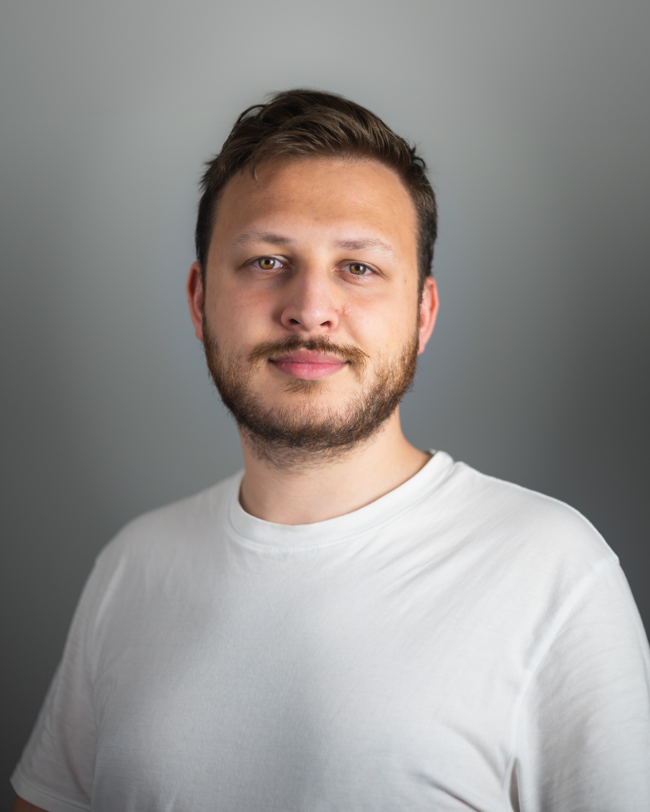

Hi!
Mein Name ist Paul. Ich bin Fotograf aus der Umgebung Weiden in der Oberpfalz.
2020 kaufte ich mir meine erste Kamera und lernte schnell die Fotografie lieben.
Seitdem versuche ich mein Können in den Bereichen Portrait-, Event- und Hochzeitsfotografie zu erweitern.
Wenn Du Interesse hast mit mir zu arbeiten oder Du Fragen hast, melde Dich
gerne bei mir!